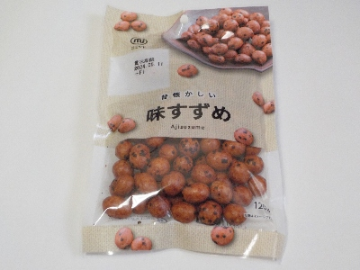
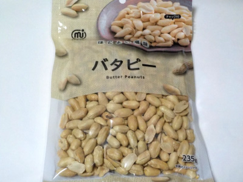
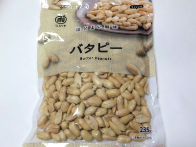
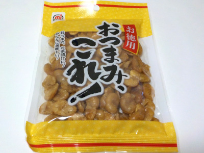

ミツヤの昔懐かしい味すずめ。
2024/04/09

カリカリの中にピーナッツが入ったお菓子です。
この商品はスズメって名前なんですね。そう言われて見るとスズメっぽいです。
醤油や砂糖で味付けしてあって美味しかったです。
2024/04/09

カリカリの中にピーナッツが入ったお菓子です。
この商品はスズメって名前なんですね。そう言われて見るとスズメっぽいです。
醤油や砂糖で味付けしてあって美味しかったです。
2023/10/21

235g入ってて税込み198円です。安いので気に入って買っています。
100gあたりの塩分が0.79gで、しっかりと塩味が効いてて美味しい。
歯ごたえはちょっと柔らかめで食べ易かったです。
2023/07/15

塩が効いてますね。美味しい。
私は塩味のお菓子を食べると落ち着くって思うんですが、ネットで検索するとあまり良くないみたいです。
まあ私が悪いんであってピーナッツは悪くないので、美味しいって思いながら食べようと思ってます。
2023/01/01

わけありなのでソラ豆は割れてたり小さかったりします。その分お値段が安いです。
大きさが小さいので食感は弱いし手でつまむ回数も多くなりますが、たいした問題ではないです。
お客さんには出しにくかもしれませんが、家庭で食べる分にはいいんじゃないでしょうか。おいしいおつまみです。